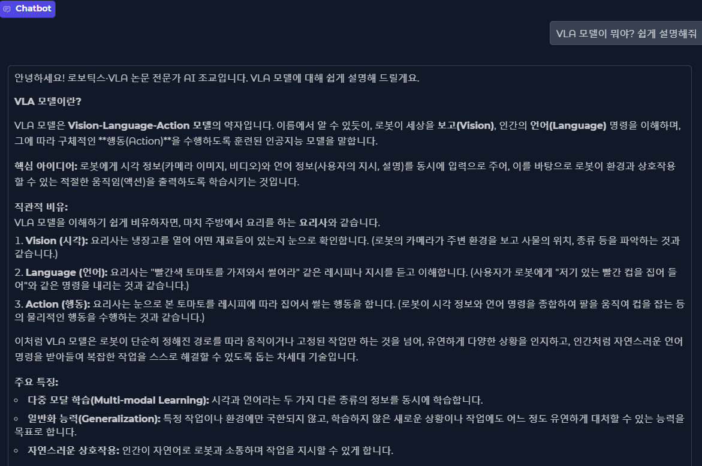

🛠 Tech Stack
- OpenVLA
- HuggingFace Transformers
- PyTorch
- Gradio
- Docker
- Oracle Always Free
- GitHub Actions
🧠 어떻게 만들었나
Vision-Language-Action(VLA) 모델을 활용하여 자연어 명령과 카메라 이미지를 입력받아 로봇의 행동 시퀀스를 생성하는 데모입니다. HuggingFace의 사전학습된 VLA 모델을 Gradio 인터페이스로 감싸서 웹에서 바로 테스트할 수 있도록 구성했습니다. 사용자가 텍스트로 명령(예: "컵을 집어서 오른쪽으로 옮겨")을 입력하면, 모델이 로봇 관절 액션 값을 예측하여 시각화합니다.
💬 이 프로젝트 어떠세요?
GitHub 계정으로 로그인하면 댓글이 본인 리포의 GitHub Discussions에 자동 저장됩니다.